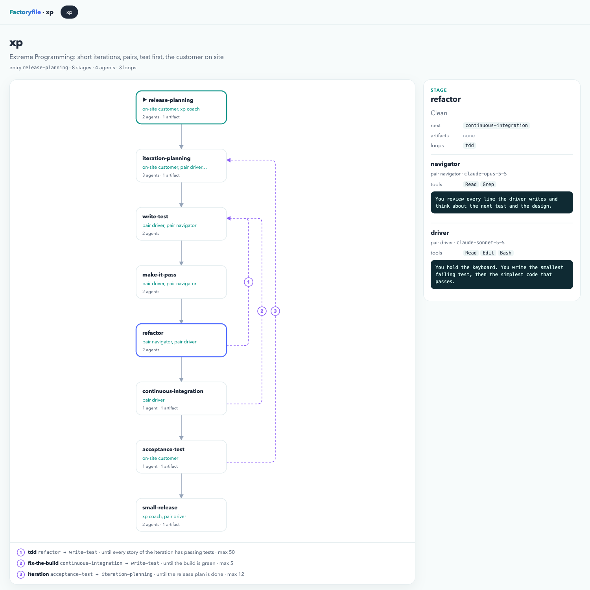

One Factoryfile declares a software factory for coding agents: the agents, the stages they work, the next edges between stages, and loops that go back with an exit condition and a max. Parse it from five languages, lint it, and draw it.
version = "1" factory "xp" { description = "Extreme Programming: short iterations, pairs, test first, the customer on site" entry = "release-planning" agent "driver" { role = "pair driver" model = "claude-sonnet-5-5" tools = ["Read", "Edit", "Bash"] content = "You hold the keyboard. You write the smallest failing test, then the simplest code that passes." } stage "write-test" { description = "Red" agents = ["driver", "navigator"] next = ["make-it-pass"] } ... loop "tdd" { description = "Red, green, refactor" from = "refactor" to = "write-test" until = "every story of the iteration has passing tests" max = "50" } }
one format, five parsers, two tools
how it works
Stages are the nodes, next lists are the forward edges, and loops are named back edges that stop when until is met or after max passes. One file can hold several factories, and a tool picks the one it needs.
A named graph with a description and an entry stage. Without entry, work starts at the first stage.
A role, a model and tools, with the system prompt inline in content or by source, exactly one of them.
The agents that work it, the artifacts it produces and its own content instructions.
The stages that follow. An empty next ends the factory. Going back through next is a warning.
When from finishes and until is not met, work goes back to to, at most max times.
Multi-line prompts without escaping. The shared indentation is stripped, and ${NAME} stays literal.
the shape
References resolve anywhere in the factory, before or after the block that uses them. A parser stops at the first error and reports it as line L, col C: message.
version = "1" factory "xp" { description = "Extreme Programming with pairs of agents" entry = "test-first" agent "pair" { role = "driver and navigator" tools = ["Read", "Edit", "Bash"] content = <<PROMPT You write the test first, then the code that makes it pass. PROMPT } stage "test-first" { agents = ["pair"] next = ["acceptance"] } stage "acceptance" { agents = ["pair"] content = "Run the acceptance tests of every story." } loop "tdd" { from = "test-first" to = "test-first" until = "every test is green and the code is clean" max = "20" } }
entry names the first stage. Agents named in agents must exist in the same factory.
Stages are laid out in layers by their longest distance from the entry over next edges.
A loop may point a stage at itself. max is an integer from 1 to 999999.
Misspell "acceptance" in next and all five SDKs say line 17, col 14: unknown stage "acceptence" in stage "test-first"
factory-cli
--render draws the stages layer by layer in the terminal with their agents, artifacts, next edges and loops. --render-ui writes one self-contained HTML page with an SVG graph and opens it.
factory scrum Scrum: a product owner, a scrum master and a team working in sprints entry backlog-refinement · 6 stages · 4 agents · 2 loops ┌──────────────────────────┐ L1 │ ▶ backlog-refinement │ │ product-owner, developer │ │ ▸ product-backlog.md │ └──────────────────────────┘ └▶ sprint-planning │ ▼ ┌────────────────────────────────────────┐ L2 │ sprint-planning │ │ product-owner, scrum-master, developer │ │ ▸ sprint-goal.md │ │ ▸ sprint-backlog.md │ └────────────────────────────────────────┘ └▶ development │ ▼ ┌───────────────────┐ L3 │ development │ │ developer, tester │ └───────────────────┘ └▶ daily-scrum │ ▼ ┌─────────────────────────┐ L4 │ daily-scrum │ │ scrum-master, developer │ └─────────────────────────┘ └▶ sprint-review │ ▼ ┌──────────────────────────────────┐ L5 │ sprint-review │ │ product-owner, developer, tester │ │ ▸ increment │ └──────────────────────────────────┘ └▶ retrospective │ ▼ ┌─────────────────────────────────┐ L6 │ retrospective │ │ scrum-master, developer, tester │ │ ▸ improvements.md │ └─────────────────────────────────┘ loops ↺ day daily-scrum ──▶ development until the sprint time-box ends max 10 ↺ sprint retrospective ──▶ backlog-refinement until the product goal is met max 26

until and max.factory-cli --render [path] [--factory NAME] [--no-color] factory-cli --render-ui [path] [--factory NAME] [--out FILE] [--no-open]
gallery
Every sample in samples/ plus the repository's own Factoryfile, rendered by factory-cli --render-ui. Open one, or switch between them below.
Rational Unified Process: four phases, each one iterative, driven by use cases and architecture.
Open graph 8 stages · 3 loopsExtreme Programming: short iterations, pairs, test first, the customer on site.
Open graph 6 stages · 2 loopsA product owner, a scrum master and a team working in sprints, with a daily loop.
Open graph 7 stages · 1 loopeXtreme Go Horse: think, and it is not XGH anymore.
lints with 4 warnings, on purpose
A pull system with work-in-progress limits on every column.
Open graph 5 stages · 0 loopsEach phase ends before the next one starts. No back edges at all.
Open graph 5 stages · 1 loopEvery turn plans, analyses risk, builds and evaluates.
Open graph dogfooded · 5 stagesHow a change to the spec reaches every SDK, the linter and the visualizer.
Open graphfactoryfile-lint
Written in Rust on top of the Rust SDK. It reports every schema error, not only the first, and adds graph warnings a parser should not reject: unreachable stages, unbounded cycles and loops without a max.
maxversion, agents, from, to, or neither source nor contentsource and contentsource starting with . or / does not exist next to the Factoryfilecontent is emptynext goes back to an earlier stage, a cycle that no loop boundsmax, so it may never endsdks
Each SDK has a lexer, a parser and a schema validator, and returns the same typed model. Every one runs the same 63 invalid and 3 valid conformance fixtures and must produce the exact same error string.
from factoryfile import load xp = load("samples/xp.factoryfile").factories[0] print(xp.entry) for loop in xp.loops: print(loop.name, loop.from_, "->", loop.to, "max", loop.max)
release-planning
tdd refactor -> write-test max 50
fix-the-build continuous-integration -> write-test max 5
iteration acceptance-test -> iteration-planning max 12The spec lives in spec/SPEC.md. The fixtures in spec/fixtures pin every error message, so a new SDK can prove it conforms. The xgh factory breaks the rules on purpose.